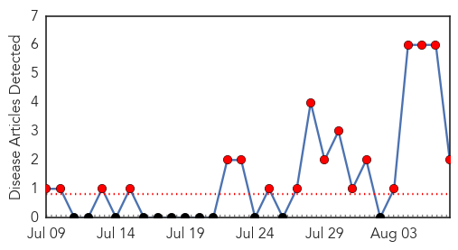
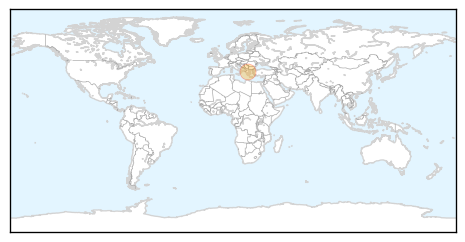
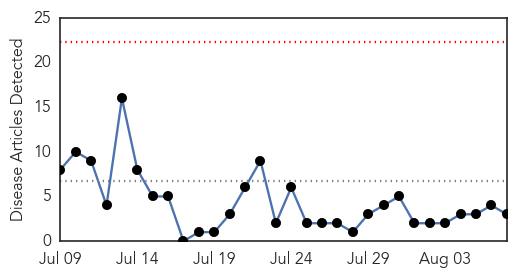
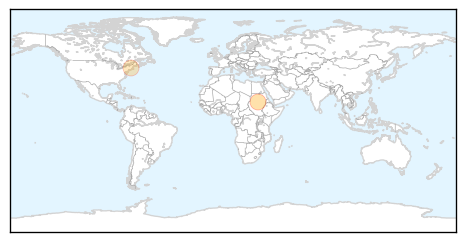

Mumps
30-Day Web Trend
18 alerts, 0 warnings

30-Day Twitter Trend
0 alerts, 0 warnings

Article Locations
Article Confidences

Top Articles:
Top Tweets:
-
No tweets found for Aug 07, 2015
Cholera
30-Day Web Trend
0 alerts, 0 warnings

30-Day Twitter Trend
4 alerts, 0 warnings

Article Locations
Article Confidences
Top Articles:
- 0.983
- The most from the coast
- 0.839
- NGO takes Ebola education to schools
- 0.752
- barfblog
Top Tweets:
- 0.528
- ORS has also proven adept in the face of new challenges like Ebola but also for cholera rotavirus heatwaves http://t.co/cmuhVpFuhT